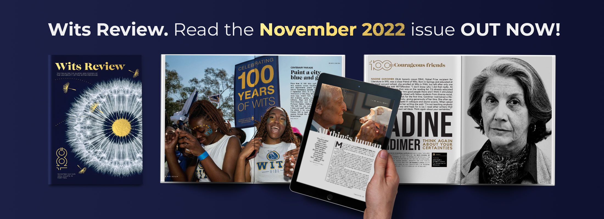
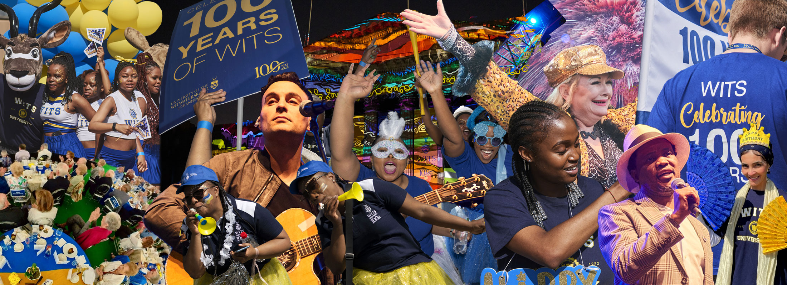
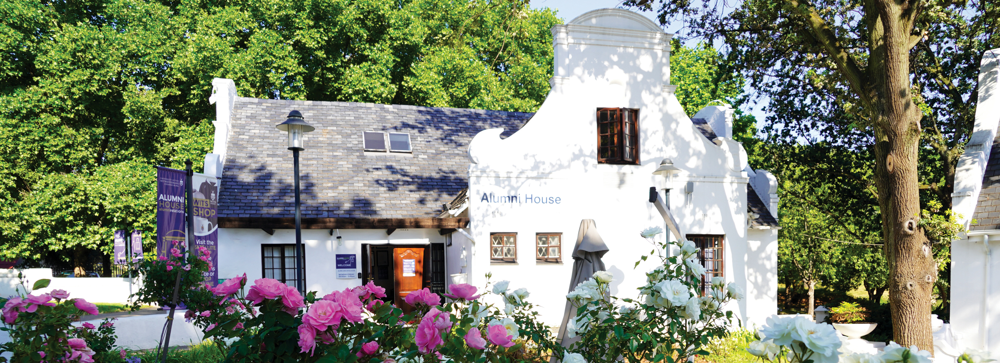
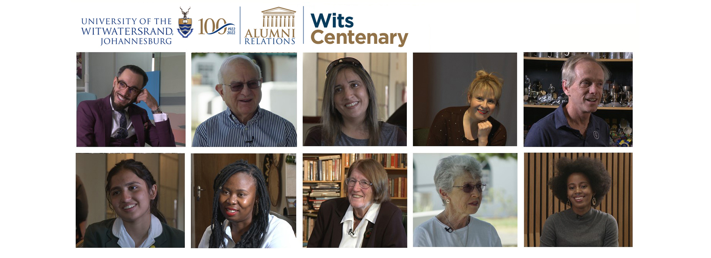

 Wits Review The magazine for alumni and friends of the University of the Witwatersrand Wits Review The magazine for alumni and friends of the University of the Witwatersrand
 Homecoming Weekend 2022 See a collection of photos and videos from the special Centenary celebration. Homecoming Weekend 2022 See a collection of photos and videos from the special Centenary celebration.
 Alumni Relations: Celebrating Wits100 Connecting you to exclusive services, networks and news for Wits alumni. Contact us. Alumni Relations: Celebrating Wits100 Connecting you to exclusive services, networks and news for Wits alumni. Contact us.
 #Witsie4Life Storytelling Series Wits Alumni Relations presents the #Witsie4Life storytelling series, shining a light on ordinary people doing extraordinary things. Celebrate the Wits Centenary in 2022. #Witsie4Life Storytelling Series Wits Alumni Relations presents the #Witsie4Life storytelling series, shining a light on ordinary people doing extraordinary things. Celebrate the Wits Centenary in 2022.
13NovInternational Reunion, Brisbane, AustraliaRoma Room, Hotel Grand Chancellor Brisbane, 23 Leichhardt Street (Cnr Wickham Terrace), Brisbane, QLD 400018:00